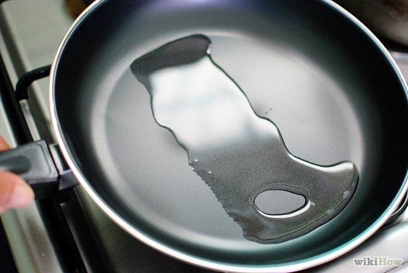
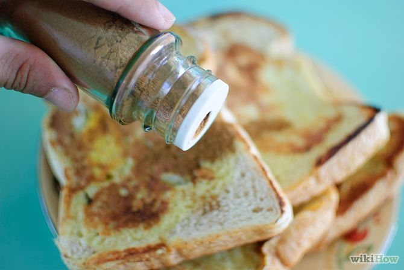
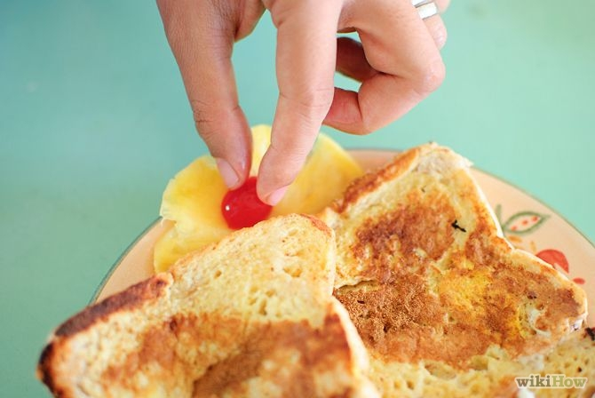

Set the stove or electric pan to medium high heat. Place the pan over the burner if cooking over the stove. Add non-stick spray, olive oil or butter so that the bread will not stick to the pan.
Spread the fat across the pan if needed, or mop up any excess.
Add milk, vanilla extract, and cinnamon and beat them with a fork or whisk.
Turn the heat down to medium-low, once the pan is heated sufficiently.
Turn the heat down to medium-low, once the pan is heated sufficiently.
Cook the toast until golden on both sides. (Approximately 45 seconds per side.)
Put the toast on a plate. Then serve immediately with syrup.
Add hot applesauce, cinnamon or icing sugar for extra deliciousness.
For the sides, add bacon, sausages, fruit with whipped cream, eggs etc. - these all go very well to make a wonderful meal.
